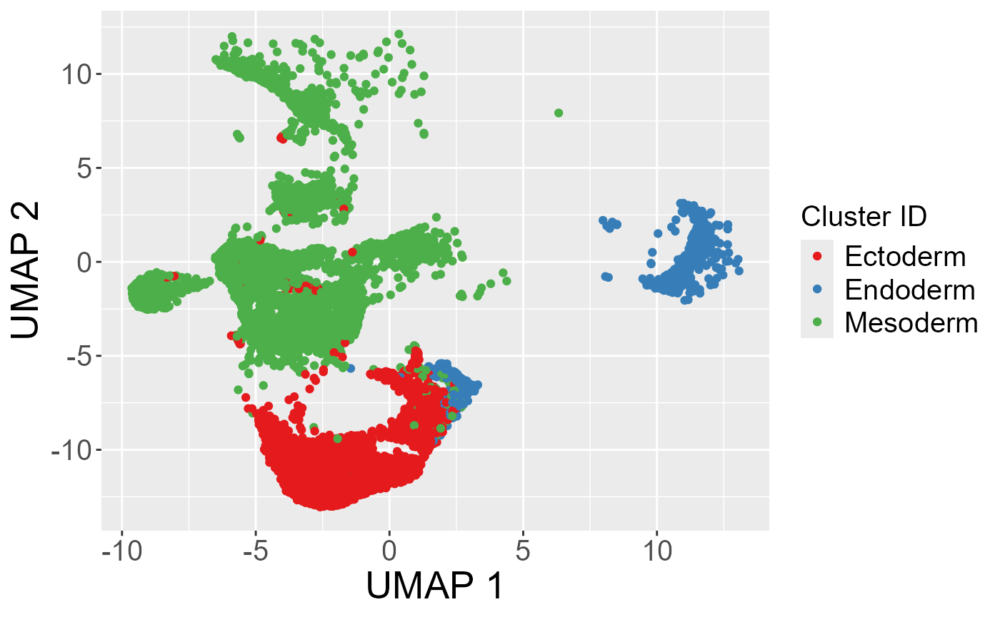

Loading package functions
library(FateScape)
library(PATH)
library(Seurat)
library(ggplot2)
library(phangorn)
library(ggtreeExtra)
library(ggtree)
library(TreeTools)
library(ape)
library(readxl)
library(devtools)
library(tidytree)
library(DCLEAR)Input(scRNA-seq data & lineage barcodes)
# Load filtered mouse embryo scRNA-seq data
# Uncomment the following line if using the unfiltered data
load("data/mouse_embryo/mouse_embroy_filtered.RData")
# Extract count data from the Seurat object
counts <- GetAssayData(object = mouse_embroy_filtered, slot = "counts")
ngenes <- nrow(counts)
ncells <- ncol(counts)
# Load filtered lineage barcode data
load("data/mouse_embryo/barcode_filtered.RData")
N_char <- ncol(barcode_filtered)
# Standardize cell IDs for both counts and barcode data
colnames(counts) <- rownames(barcode_filtered) <- paste("cell", 1:ncells, sep = "_")Visualision
# Extract UMAP embeddings from the Seurat object
umap_res <- Embeddings(mouse_embroy_filtered, reduction = "umap")
umap_df <- data.frame(UMAP1 = umap_res[, 1], UMAP2 = umap_res[, 2])
# Create a UMAP plot colored by cell states
p <- ggplot(umap_df) +
geom_point(aes(x = UMAP1, y = UMAP2, color = mouse_embroy_filtered$cell_states)) +
scale_color_brewer(palette = "Set1") +
labs(color = "Cluster ID") +
xlab("UMAP 1") +
ylab("UMAP 2") +
theme(axis.text = element_text(size = 15),
axis.title = element_text(size = 20),
legend.title = element_text(size = 15),
legend.text = element_text(size = 15))
p
Construction of the cell state tree
# Assign cell IDs to the UMAP results
rownames(umap_res) <- paste("cell", 1:nrow(barcode_filtered), sep = "_")
# Extract cell state labels from the Seurat object
labels_new <- as.character(mouse_embroy_filtered$cell_states)
# Define state lineage paths
state_lineages <- list()
state_lineages[[1]] <- c("Ectoderm", "Endoderm")
state_lineages[[2]] <- c("Ectoderm", "Mesoderm")
names(state_lineages) <- paste0("L", 1:length(state_lineages))Barcode imputation and grouping cells by state lineage
# Perform barcode imputation to address stochastic dropout
barcodes <- dropout_imputation_alter(as.matrix(barcode_filtered), N_char, ncells, ceiling(N_char * 0.8))
# Create a data frame of cell IDs and their corresponding cell state labels
state <- data.frame(cell_id = paste("cell", 1:ncells, sep = "_"),
cluster = labels_new)
# Generate state lineage information
sl_info <- state_lineage_info(state_lineages, ncells, state, barcodes)
state_lineage <- sl_info[[1]]
cell_lineages <- sl_info[[2]]
barcodes_lineages <- sl_info[[3]]
state_labels_lineages <- sl_info[[4]]Reconstruction of the sub cell division trees
# Construct initial sub-cell division trees based on state lineages and barcode data
Trees_initial <- initial_tree_construction(state_lineages, barcodes_lineages)
# Refine the initial subtrees using a maximum likelihood framework and subtree exchanges
refined_subtree <- subtree_refinement(Trees_initial, state_lineages, barcodes_lineages,N_char, state_labels_lineages,lambda1 = 0.1, lambda2 = 0.9,maxIter = 100, repeat_time = 10)
bestsubtree <- refined_subtree[[1]]Removing duplicated leaf nodes from the refined subtrees
bestsubtree <- drop_duplicated_tips(bestsubtree, barcodes_lineages, cell_lineages,state_lineage, alpha = 1.5, beta = 1.5)Decomposition and reassembly of sub-cell division trees
# Generate root barcodes for each subtree from the refined best sub-cell division trees
subtrees_rootbar <- get_subtree_root_barcodes(bestsubtree, state, barcodes, length(state_lineages))
# Compute the common mutation matrix between the subtrees' root barcodes
CM <- common_mutation_matrix(subtrees_rootbar)
# Compute ranking and weight matrices based on mutation patterns
Nodes_rank <- subtrees_rank(CM)[[1]]
Nodes_weight <- subtrees_rank(CM)[[2]]
# Decompose refined subtrees into sub-subtrees for further merging
subsubtrees <- decompose_subtrees(bestsubtree, state, barcodes, length(state_lineages))
# Merge the sub-cell division trees using Ward's method
Tree_Merge <- merge_subcell_trees_ward(subtrees_rootbar, subsubtrees)Inference of the plasticity and heritability of cell states.
# # Use the merged tree from previous steps for downstream analysis
tree <- Tree_Merge
# Map cell state labels to the tree tips
tree$states_chr <- labels_new[match(tree$tip.label, state$cell_id)]
tree$states <- as.numeric(factor(labels_new[match(tree$tip.label, state$cell_id)]))
tree$states[is.na(tree$states)] <- max(tree$states, na.rm = TRUE)
# Compute phylogenetic distances and auto-correlation metrics
W <- one_node_tree_dist(tree)
X <- catMat(tree$states)
treexcor <- xcor(X, W)
tree_phy_cor <- treexcor$phy_cor
Idf <- reshape2::melt(tree_phy_cor, value.name = "I")
Zdf <- reshape2::melt(treexcor$Z.score, value.name = "Z")
df <- full_join(Idf, Zdf, by = c("Var1", "Var2"))
df <- df %>% mutate(Var1 = as.factor(Var1), Var2 = as.factor(Var2))
# Phylogenetic auto-correlation (heritability) bar plots
herit1 <- df %>%
filter(Var1 == Var2) %>%
ggplot(aes(x = Var1, y = I, fill = Var1)) +
geom_bar(stat = "identity") +
ylim(c(-0.1, 1)) +
theme_classic() +
labs(fill = "Cell state", y = "Phylogenetic auto-correlation", x = "Cell state") +
ggtitle("Cell state heritability", subtitle = "auto-correlation")
maxz <- max(abs(df$Z))
herit2 <- df %>%
filter(Var1 == Var2) %>%
ggplot(aes(x = Var1, y = Z, fill = Var1)) +
geom_bar(stat = "identity") +
ylim(c(-maxz, maxz)) +
theme_classic() +
labs(fill = "Cell state", y = "Phylogenetic auto-correlation\n(z score)", x = "Cell state") +
geom_hline(yintercept = qnorm(0.05, lower.tail = FALSE), col = "black", lty = 2) +
ggtitle("Cell state heritability", subtitle = "z score")
# Display the heritability plots side by side
herit1 + herit2
# Plot a heatmap of the phylogenetic correlation between cell states
df %>%
ggplot(aes(x = Var1, y = Var2, fill = I)) +
geom_tile(col = "white") +
scale_fill_distiller(palette = 5, type = "div", limits = c(-1, 1)) +
theme_classic() +
scale_y_discrete(limits = rev) +
labs(fill = "Phylogenetic\ncorrelation", x = "Cell state", y = "Cell state") +
theme(aspect.ratio = 1)
leaf_states <- state$cluster
names(leaf_states) <- state$cell_id
depth_df <- compute_node_depths(Tree_Merge)
states <- unique(leaf_states)
theme_set(theme_light())
ggplot(entropy_path_combined, aes(x = depth, y = entropy ))+
geom_point(color = "#C692C0", alpha = 0.1)+
stat_smooth(method = 'gam' , color = "#7C4296", size = 0.7) +
#geom_line(color = "#7C4296", size = 0.7)+
theme(axis.text.x = element_text(angle =0, vjust =1, hjust =1))+
labs(x ="Depth", y ="Entropy")+
facet_wrap(~ cell_type, nrow = 1, ncol = 3)+
theme(axis.text = element_text(color = "black", size = 5.5, family = 'Arial'),
axis.title = element_text(family = 'Arial', size = 6),
strip.background = element_rect(fill = "#DCDDDD"),
strip.text = element_text(family = "Arial", face = "bold", color = "black",
hjust = 0, size = 6))+
theme(plot.margin=unit(c(4.7, 0.8, 4.7, 0.8),'cm'))+
theme(panel.grid.major = element_line(color = "#DCDDDD", size = 0.25),
panel.grid.minor = element_line(color = "#EFEFEF", size = 0.1))
entropy_path_list <- lapply(states, function(cell_type) {
entropy_df <- entropy_path_combined[entropy_path_combined$cell_type == cell_type,]
valid <- !is.na(entropy_df$entropy)
H <- entropy_df$entropy[valid]
idx <- seq(1,length(H),20)
H_slope <- H[idx + 20] - H[idx]
slope_df <- data.frame(id = 1:length(H_slope), slope = H_slope, cell_type = cell_type, sign_label = sign(H_slope))
slope_df$sign_label <- factor(sign(slope_df$slope), levels = c(-1, 0, 1),
labels = c("neg", "zero", "pos"))
slope_df <- slope_df[c(1:40),]
slope_df$id <- slope_df$id*20
return(slope_df)
})
entropy_slope_combined <- do.call(rbind, entropy_path_list)
entropy_slope_combined <- entropy_slope_combined[!is.na(entropy_slope_combined['cell_type']),]
entropy_slope_combined <- entropy_slope_combined[!is.na(entropy_slope_combined['slope']),]
ggplot(entropy_slope_combined, aes(x = id, y = cell_type)) +
geom_point(aes(size = abs(slope), color = sign_label), shape = 16) +
scale_color_manual(values = c("pos" = "#F29537", "neg" = "#90C3DA", "zero" = "grey")) +
theme(axis.text.y = element_text(angle = 0, vjust = 1, hjust = 0, size = 6),
axis.text.x = element_text(color = "black", size = 6, family = 'Arial'),
strip.background = element_rect(fill = "#DCDDDD"))+
theme(plot.margin=unit(c(5.5, 0.2, 5.5, 0.2),'cm'))+
labs(x = NULL, y = NULL)+
theme(panel.grid.major = element_line(color = "#DCDDDD", size = 0.25),
panel.grid.minor = element_line(color = "#EFEFEF", size = 0.1))